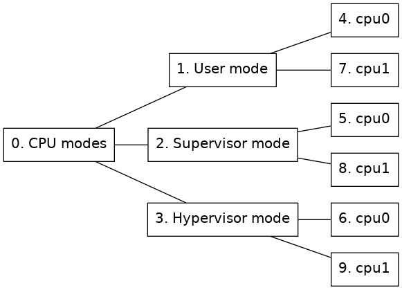

The CPU mode tracker, in module cpumode-software-tracker, tracks processor state for the processors of a system. It will keep track of which mode each processor is active in. This tracker can for example be useful to track when an operating system is active in kernel mode and when it is running a user program for an operating system for which there is no dedicated tracker available.
In order to use the CPU mode tracker use the insert-tracker command with the cpumode_software_tracker_comp class as tracker, see section 2.8 for more information about tracker configuration.
Figure 5 shows an example of the CPU mode node tree representation. One of the right-most nodes will be active on each processor depending on the mode that the processor is currently running in. In other words, one of the nodes 4, 5 or 6 will be active for cpu0 and one of the nodes 7, 8 or 9 will be active for cpu1.
